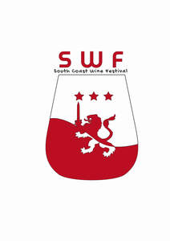

Trade Mark Journal No.2025/019 9 May 2025
UK00004122427 8 November 2024 (16,21,25,33,41)

- Class 16
- Handpainted paper wine bottle labels; Paper wine gift bags; Printed novelty wine labels.
- Class 21
- Wine decanters; Wine glasses; Wine pourers; Wine jugs; Coolers for wine; Wine coolers; Wine chillers; Wine aerators; Wine bottle cradles; Wine openers; Wine buckets; Wine tasters [siphons]; Wine strainers; Tubes [pipettes] for wine tasting; Non-electric coolers for wine; Cooling buckets for wine; Ladles for serving wine; Vacuum pumps for wine bottles; Wine drip collars; Beer glasses; Whisky glasses; Wine drip collars specially adapted for use around the top of wine bottles to stop drips; Wine coasters of precious metal; Bottle pourers; Glass decanters; Glass bottles; Drinking bottles; Wine-tasting pipettes; Glass stoppers for bottles; Drinking bottles for sports; Beverage glassware; Glass carafes; Wine glasses; glasses; decanter; wine openers.
- Class 25
- Cap; hat.
- Class 33
- Wine; Grape wine; Sparkling grape wine; Sparkling wine; Fruit wine; Mulled wine; Red wine; Cooking wine; Strawberry wine; Blackberry wine; Sparkling fruit wine; Wines; White wine; Sweet wine; Aperitif wines; Wine coolers [drinks]; Mulled wines; Sparkling wines; Beverages containing wine [spritzers]; Wine punch; Dessert wines; Low-alcoholic wine; Alcoholic wines; Prepared wine cocktails; Still wine; Red wines; Sparkling red wines; White wines; Table wines; Yellow rice wine; Sparkling white wines; Rose wines; Fortified wines; Sweet wines; Wine-based drinks; Black raspberry wine (Bokbunjaju); Wine-based beverages; Natural sparkling wines; Wine-based aperitifs; Naturally sparkling wines; Acanthopanax wine (Ogapiju); Whiskey [whisky]; Korean traditional rice wine (makgeoli); Alcoholic fruit cocktail drinks; Cooking brandy; Whisky; Brandy; Aperitifs with a distilled alcoholic liquor base.
- Class 41
- Entertainment relating to wine tasting; Wine tasting services (education); Wine tastings [entertainment services]; Schools for wine waiters; Wine tastings [educational services]; Wine tasting events for educational purposes.
Mauro Gerardo Guasti Gomez